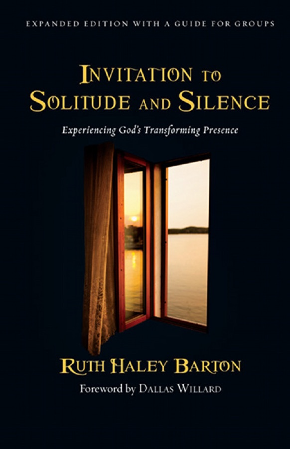

Experiencing God's transforming presence
Barton is a spiritual director, and this book is a practical guide to the two practices she calls the most meaningful of her spiritual life. She walks Elijah's road from the broom tree to "a sound of sheer silence" and back. Each chapter ends with a short exercise to do, not just read.

Willard begins with Pascal: "all the unhappiness of men arises from one single fact, that they cannot stay quietly in their own room." We chase rest through excitement, and "more time" only fills up the way the old time did. The way out is a decision and a practice. The decision is "to release the world and your fate, including your reputation and 'success,' into the hands of God." You still act, but you don't take charge of outcomes. The practice is solitude and silence, "the most radical of the spiritual disciplines because they most directly attack the sources of human misery." To be in solitude is "to choose to do nothing. For extensive periods of time." In silence "we stop making demands on God. It is enough that God is God and we are his." Over time they are no longer something we have to remember to do: "They are whom we have become."
In the preface Barton says these practices have been "the single most meaningful aspect of my spiritual life," which is a strong claim from someone who became a Christian at four. Yet more than ten years in, she still struggles to protect the time against her "inner demons": the wish "to perform, to be seen as competent (at least!), productive, culturally relevant, balanced." She chose silence over Scripture, prayer or journaling as her subject because it is "the most challenging, the most needed and the least experienced spiritual discipline among evangelical Christians." She calls her tradition "very busy, wordy and heady." Read the book slowly, she advises, and stay with each chapter's practice "until God releases you."
Ch. 1 · Beyond words"Truth be told, it was desperation." In her early thirties Barton was a pastor's kid, married with three small children, on a church staff, writing, speaking and in seminary, and inside she was in chaos. "Even though I had been a Christian for many years I did not know how to love — really." She was impatient at best and angry at worst that people wouldn't leave her alone to pursue her ambitions. Under that were questions she couldn't quiet. Was there anything truer about her than her roles and achievements? Was transformation possible this side of the grave? Why couldn't she say no? Under those were buried anger, sadness, confusion and loneliness.
She went to a psychologist for therapy, and the therapist eventually suggested they switch to spiritual direction. Barton expected more talking, "in three easy steps if possible!" Instead the director told her: "Ruth, you are like a jar of river water all shaken up. What you need is to sit still long enough that the sediment can settle and the water can become clear." She was a word person and an achiever, and she couldn't imagine it. "Even methods that don't work are better than no methods at all!" But she recognised herself in the image. Her lesson: "you stay with the feelings of desperation and let desperation do its good work." Desperation and desire are "twin engines."
Settle into a comfortable position and take three deep breaths, breathing in deeply and out slowly. Let whatever is usually unnamed come to the surface. What is drawing you into solitude now: desperation, desire, or another word? Feel it, name it, sit with it, and tell God if you want to. Today it's enough to make space for it. At the end, thank God for being with you while you noticed.
Solitude means pulling away from people so we can give God our undivided attention. Silence goes further: we also let the noise of our own thoughts and striving settle. Our wordiness, even in prayer, can be "one facet of a need to control things." Basil Pennington: God "will not push himself into our lives," but if we open space with silence, "he will speak to our souls... by presence."
Barton found it hard. While "normal" students start with twenty minutes, she called herself a "remedial student" and began with ten. "It was better to celebrate small successes than become discouraged by larger failures." For a year she struggled to reach ten minutes while the laundry and her to-do lists clamoured. But solitude and silence "are not, in the end, about success and failure. They are about showing up and letting God do the rest." She learned to trust a spiritual law of gravity: "We don't have to do anything but show up and trust the spiritual law of gravity that says, Be still, and the knowing will come."
A sacred space has three dimensions. It is a place, away from your desk (or at least with your chair turned to a window), perhaps with a symbol; she lights a candle for the Spirit's presence. It is a time with no work in it, not even preparing next Sunday's lesson. And it is a place in the soul: keep some of what happens private, pondering it like Mary rather than turning it straight into ministry material.
Elijah was forced into solitude after Mount Carmel; most of us are "still fairly functional," so resistance flares just as we're about to begin. Barton calls it the push-pull phenomenon. She arrives in solitude like a plane landed by "Captain Crash" and runs to God holding so much baggage she's "clumsy and hard to hug." At O'Hare, on her way to a five-day silent retreat she had longed for, she was ambushed by worry. Will my daughters be okay? Can my husband cope? I'm in the middle of interviews for a job I want. Will I sneak a look at my voicemail? God's gentle question: "Can you trust that I love your family and friends even more than you do?... Can you accept the fact that you are not indispensable?"
Then came a subtler fear, of the silence itself. Her journal: afraid of being bored, frantic or panicky; of wanting to go home; of not sleeping; "afraid of hearing promptings from God that are risky to follow... I'm just plain afraid." Willard: "Silence is frightening because it strips us as nothing else does... what if there turns out to be very little between us and God?" Silence also takes away control: "the initiative is God's, not ours" (Carlo Carretto). The deepest fear is "What if I show up and God doesn't?"
Underneath fear is desire. Christians distrust desire because it can spread like a forest fire, and many of us distance ourselves from it to avoid the pain of not getting what we want. But "your desire for God is the truest and most essential thing about you. It is truer than your sin, it is truer than your woundedness." And God desired us first: "the origin of our desire for God is God's desire for us." Solitude is "about lovers desiring each other enough to finally take the leap."
Notice the push and the pull at once. List your cares and concerns on paper, then release them in prayer or put the page in an envelope marked TRUST and set it aside. Barton suggests making this a regular way of entering solitude. Name any fear of the silence in words or images, without fighting it, "like a child who is comforted by a parent's presence." Then ask what your desire looks like these days, and whether you are brave enough to claim it. Close with thanks or the Lord's Prayer.
Ch. 4 · Dangerously tiredWhen Elijah reached the broom tree, God didn't teach him anything. He let him sleep, woke him to eat, and let him sleep again. Barton's director's first questions were about her food, sleep and exercise. If you fall asleep in prayer or solitude feels like one more chore, don't judge yourself: "times of solitude and silence are not times for judging. They are times for noticing." "Perhaps the most spiritual thing we could do is get more rest." She plans at least one nap into every longer retreat.
Good tired is a spring rain cloud; dangerous tired is a green tornado sky. Its signs: you can't linger over coffee; you check email "just one more time"; you can't stop doing projects; your nightstand is piled with professional reading; a full day off seems impossible; you work through holidays; you can't rest even when you could. In spare time you escape into eating, drinking, spending and TV, because you're "too tired to choose activities that are truly life-giving." You feel numb, both to the bad emotions and the good ones. "I can be very, very busy and look very, very important but be unable to hear the quiet, sure voice of the One who calls me the beloved."
Place yourself on the continuum without rushing to fix anything. Pray: "God, this is what is true about me. What are we going to do about this?" Hear Matthew 11:28, "Come to me, all you that are weary," and tell God what you need.
Psalm 131: "I have calmed and quieted my soul, like a weaned child with its mother." Her first daughter, Charity, was restless even while nursing. Their best moments came just afterwards, when the need was met and her body relaxed against her mother's, "heart to heart, skin to skin." God longs for those moments with us. Barton had kept the body in a separate compartment from the spirit. In silence she noticed tension in her shoulders, holding her breath when nervous, and lying awake with worries. One retreatant wrote: "My heart beats too fast... I am definitely hyped up by caffeine... I've been on an adrenalin high my whole life!" Barton changed her habits: real rest instead of caffeine, good food, water, attention to her breathing, more movement.
She widened what solitude can look like. Slow walks, jogs and bike rides count. At the end of the day she walks with God and reviews the day: an examen of consciousness (where God was present) and an examen of conscience (how she responded), then releases the day so she can sleep. On longer retreats she starts with a good night's sleep; on single days, with a nap. She no longer tries to arrive rested. "He gives sleep to his beloved."
Take three slow breaths, intending to rest your whole self in God "as safe with him as a baby is with his mother." Notice where you're tight and adjust your position. Ask how your body is these days: tired, energised, aching, strong, cared for or abused. Is God offering something now, such as a nap under a blanket, a walk, or simply more sitting? Take it, and close with thanks.
Psalm 131:1: "I do not occupy myself with things too great and too marvelous for me." "Yesterday I wanted to fix my marriage, today I want to fix my children, tomorrow I'll try to fix the world." Her husband once heard her sit up in her sleep and deliver a coherent sermon introduction. The mind isn't bad, but it is limited: "thinking about someone is not the same thing as being in their presence." Her director let her talk for a long time so she would hit "the wall of mental impasse." The Hebrew behind "Be still" (Ps 46:10) means "let go of your grip." Prayer is "standing in the presence of God with the mind in the heart" (Nouwen), the heart being the biblical centre of the whole person. Our God-talk is "the finger that points to the moon" (Richard Rohr). Silence is sitting in the moonlight.
“Be patient toward all that is unsolved in your heart and try to love the questions themselves.”Rilke, quoted in ch. 6
After three breaths, notice the difference between what's going on in your mind and what's going on in your heart. Name your "I don't know" place, the question no amount of thinking has answered. Say it aloud to God and tell him how it feels not to know. Don't grab at answers; let related thoughts pass like clouds. If you get impatient, ask: "Am I willing to be patient with this thing that is unsolved in my heart?" Close with the Lord's Prayer, letting it shape your response.
"We all need a place to be a child." The soul rests by "simply being with God with what is," like musical chairs: when the music stops you sit down where you are, "sweaty, out of breath." She used to try to sanitise everything before solitude: relationships, confessions, voicemail, inbox, "I even tried to make sure the dishes were done." That was the wrong idea.
Sometimes what is there is gratitude. Flying back late from her daughter's prom in the middle of a speaking trip, she let thankfulness fill "every corner of my soul" for 75 minutes, and found it fuelled her teaching the next day "in a way that mere sleep could not have accomplished." Sometimes it is grief. After a personal loss she couldn't tell anyone about, she crawled back into bed at lunchtime and let waves of pain wash over her for a couple of hours. God kept her awake. "Nothing was fixed, but I was okay. I had not been swept away." The next morning's set prayer asked God to "quiet our souls in thy presence with the stillness of a wise trust."
Stop the music. Is there a grief you've been holding in, big or small, like a hurtful exchange or being left out? Feel it with the One who bears it with you, and let your body kneel, lie down, weep or stay still. Pray: "In silence my soul waits for you alone, O God; from you alone comes my salvation" (Ps 62:1). Then ask what you're grateful for, and simply bask in it.
"Get up and eat, otherwise the journey will be too much for you." Elijah must have thought he'd made himself clear that he was finished. But rest was preparation. Once rested, he knew what he wanted, an encounter with God, and he walked forty days to Horeb, the mountain of Moses, which is ringed by five or six deserts. Dan Allender: "In the silence of the desert we hear our dependence on noise... In the desert we trust God or die."
Barton could trace her whole spiritual journey through her experiences of emptiness. As a skinny pastor's kid with braces she envied "the beautiful ones," and the only thing that helped was journaling to God. Recently she took a day at short notice because she was becoming demanding and frenetic. Even then everything in her wanted to go shopping, read a novel, or write about solitude instead of doing it. She found three deserts: an empty place in her marriage, a relationship she couldn't fix, and an injury that stopped her running. First came anger, then sadness, then tears, and the tears were a gift. Afterwards she was empty in a different way, "soft and open like a hand outstretched and ready to receive."
Nothing seemed to have happened, but something had shifted. She stopped resisting the emptiness. Rilke: "True love consists in this, that two solitudes protect and border and salute each other." She let the unresolved relationship stay unresolved and refused to worry about tomorrow's ankle. "Emptiness is prerequisite to being filled."
Name the empty places in your life, the ones you usually avoid. Sit with your hands open in your lap and imagine the emptiness as "a receptacle for the very presence of God." Don't demand that God fill it on your terms. Let it be "a place of openness, receptivity and spiritual possibility."
There are no quick fixes. Elijah walked forty days and then waited in a cave, and Barton confesses that she hates waiting, whether at the grocery store, the doctor's or the salon. When God finally speaks, it is with a question. Elijah's answer pours out the good ("I have been very zealous"), the bad (the prophets killed) and the ugly ("I alone am left"), which wasn't even true. "This willingness to see ourselves as we are and to name it in God's presence is at the very heart of the spiritual journey," and it takes time to feel safe enough to do it.
Her own answer, years in: "I have been very zealous for the Lord... but the truth is, I am empty... I am angry... It feels like I am the only one." God didn't lecture Elijah. He told him to stand on the mountain, and then came wind, earthquake and fire. Barton reads them also as the inner chaos that comes when pretence falls away. Her questions: Am I worth anything if I'm not proving myself? Who am I when I'm not busy? Is God really enough? She saw that much of her service had been driven by "a compulsive need to prove myself," especially to people in authority.
A concrete case: she took a day alone to reread five finished chapters of a book on men and women in the church, and she hated them. They were angry, strident, tilted toward women's perspectives, and full of other people's research. "My unresolved hurt and anger had seeped into the book." By the afternoon she sensed God's guidance: stop writing and spend a few months just listening to the men in her life. She did. She wrote a sixth chapter from a softer place, and her editor called: "I didn't much like the first five chapters, but I really liked the sixth one."
This is the classic stage of illumination (waking up to reality) and purgation (being stripped of what is false). You can feel as if you are falling off the path when you are really "in the heart of the journey." The last thing to let go of is "the self we have created in response to the wounds of our life," which she calls "bungee jumping for the soul." Nouwen: solitude "is not a private therapeutic place. Rather it is the place of conversion." Sometimes the insight is small; one woman heard, "Sometimes you're not very nice to people." The waiting is active, like a night watchman who knows morning will come (Ps 130).
Breathe, and hear God ask: "What are you doing here, ______?" Let your answer come up unedited, in a journal, aloud or as emotion. It doesn't have to be heavy. Her most recent answer was simply: "I am here because I need to find the ground of my being again." Say what is true, and wait.
If we stay with the seeing and the grief and stop fighting, "all of a sudden it becomes very quiet." At first it can feel like another emptiness, or like dread that punishment is coming. But this silence is "pregnant with the presence of God": a stirring, a whisper, sometimes something physical. God didn't scold Elijah. Elijah learned that he was loved as much exhausted in a cave as on Carmel calling down fire. He wrapped his face in his mantle and simply stood there. "I know of no better response." Merton: "The deepest level of communication is not communication but communion."
Biblical knowing "unites the subject with object": the difference between reading about someone and becoming their friend, between saying "I love you" and making love. What is left when the false self is stripped away is the essential self: "smaller... truer... softer... freer," held in a Love "deeper than any abyss," which becomes "a bedrock of settledness at the core of our being."
“As we allow ourselves to be known in solitude, we discover that we are known by love.”Parker Palmer, epigraph to ch. 10
Settle in and enjoy the safety of this time, place and Presence. Look back at your answer to "What are you doing here?" Where do you recognise yourself: something is wrong but you can't say what, seeing yourself newly, desperate enough to let go, or in a silence you're not sure you can trust? Stay there, tell God, and follow any prompting. Close with the Lord's Prayer as an anchor if a handhold of the false self is giving way.
Many people come to silence wanting God's will so they can "get it right." The surprise is that the deepest need is to know we can never fall out of God's love. Only then can we listen without fearing "a killjoy God." Willard: apprentices must become "quite certain that there is no 'catch,' no limit, to the goodness of his intentions." Elijah never asked for guidance; it came when he was ready to hear it. And it was practical: anoint new kings and a successor, and go back with your limits in mind.
Barton's example: halfway through a Master of Divinity, the usual degree for pastors, she sensed a call to spiritual direction, which the degree didn't train for. In the stillness, the question came: "Are you enamored with having the letters M.Div. after your name as a way of proving yourself?" She chose different training, and calls it one of her best vocational decisions. Later she still felt a quiet desire to be ordained, and she held it without needing to work it out. Discernment notices circumstances, Scripture, wise friends and tradition, and also the inner movements Ignatius called consolation (life-giving connection with God, others and your true self) and desolation (off-centre, turmoil). "God's will for us is generally for us to do more of that which gives us life." "Every obedience, however small... quickens our sensitivity to him" (Albert Day).
Ask God to bring to mind the moment in the last couple of days you're most grateful for, when you most gave and received love and felt most alive. Then the moment you're least grateful for, which drained life from you. What wisdom or questions come from comparing them? Is God guiding you toward more of what gives life? (This exercise comes from the Linns' Sleeping with Bread.)
At first she couldn't get enough of solitude and was frightened by it: would she ever want to re-engage, or produce again? She compares herself to a starving child shovelling down her first bowl of rice, which isn't pretty but does the job. Retreatants often whisper to her afterwards, "When it was time to come back, I didn't want to come back... Is that normal?" Some of us are so starved we no longer even want real food.
On a summer night her house filled with about twenty of her daughter's junior-high friends while she was trying to meet a deadline. Her first reaction was irritation. Then she tried Julian of Norwich's line: "I look at God, I look at you, and I keep looking at God." She asked for "sacred eyes" and began to see the noise as youthful energy and each child as beautiful. A wordless prayer of blessing rose in her. "If my experiences in solitude and silence don't make a difference in this real-life moment, then I'm not sure any of this is worth much." Solitude was becoming "an inner condition."
The fruit is for others. We speak better because we notice the need to impress or wound before it comes out. We become safer company, because we aren't hooked by our own anxieties. Our hard edges soften, because "every broken place that has not been healed... is a hard edge of our personality that slices and dices other people." Bonhoeffer: "Let him who cannot be alone beware of community. Let him who is not in community beware of being alone." Success now means living in the rhythms of "work and rest, solitude and community, silence and word," so the jar keeps finding time to sit still. She knows her daily, weekly and monthly needs "as clearly as I know that I need to eat three meals a day." When the rhythm slips she doesn't binge on guilt. She goes back to desperation and desire.
Sit at least ten minutes and enjoy God's presence. Then ask him to show you a recent moment when you were different with others: trusting love, following wisdom, holding back a critical comment, resting in God instead of panicking. Savour it. Then name the rhythms of solitude and silence that produced it, and set your own, "as concrete and realistic as possible." Tell God your desire and your commitment.
For groups, the expanded edition adds thirteen sessions with the same shape. Open with silence: the leader says "Be still and know that I am God," everyone keeps three, five or ten minutes of silence, and it ends with "Come Holy Spirit." Then spiritual listening: one person at a time shares their week of practice without interruption, the group is quiet for a moment, then responds without fixing, advising or saying "I know exactly how you feel." Close with silence and "Thanks be to God" or the Lord's Prayer. "Sharing silence is a profound act of trust, love, and courtesy" (Gunilla Norris).
Barton gives the session, the inner route and the honesty. John Mark Comer's Into the Quiet gives a rhythm and tools for when your mind wanders (he even quotes Barton's tiredness spectrum). Here is one way to combine them. The labels show where each part comes from.